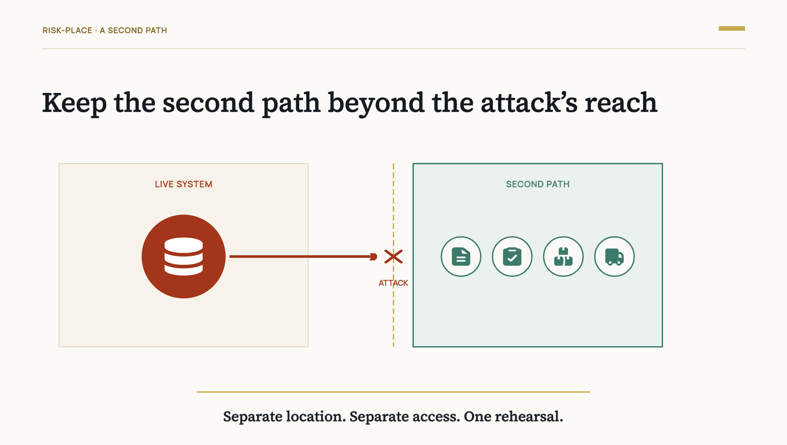

A company may have a backup, a set of forms and even a second server, yet still lack a working second path. Start with a simple question: can the same attack reach the reserve, the people who use it and their access credentials?

Separate access as well as data
A copy on a neighbouring server is convenient for rapid recovery from some technical failures. During a ransomware attack, another question matters: can the attacker change or delete that copy using the same access that closed the live database?
Keep the second path in a separate environment with its own access rules. The same applies to stock exports, contacts and instructions. If the duty manager cannot open them without the main system, practical separation is absent.
Check the attack route to the reserve instead of relying on the existence of a copy.
Assemble the minimum working kit
Do not try to reproduce the whole company. Select a few actions that preserve the most important flow: accept a limited order, check a commodity balance, release an authorised batch and give the customer a confirmed date.
- A dated export of the necessary balances and business details.
- Order, stock movement and shipping forms with clear numbering.
- A list of people who may promise dates and authorise release.
- Separately stored counterparty contacts and a rule for the next update.
Give every element an owner, a storage location and a last-updated time. An old export may create confidence without helping the company ship the correct batch.
Test the path with one order
A rehearsal does not need to stop the company. Run one practice order through the second path: find the export, complete the documents, obtain authority, record the operation and pass the details to the person responsible for reconciliation.
If participants had to enter the live system for an instruction or a telephone number, record that dependency. Remove it after the rehearsal and repeat the test later. Small corrections make the second path more reliable; a larger document folder does not.
Acknowledge the limit of manual work in advance
The second path does not promise full output or remove the need to restore the ledger. It preserves a limited, pre-selected flow and keeps the records in order. Unique batches, special prices and complex specifications may remain outside it.
A ransomware readiness check helps define that limit and test separation. It assesses the second path by what the company can actually complete on the day of the attack.
Frequently asked questions
For a ransomware scenario, that is usually insufficient. Check whether the copy is protected from the same attack and the same compromised access.
One limited order from acceptance to shipping, including the customer letter and a record for later reconciliation with the main system.
A protected copy may be appropriate if access is restricted, the version is controlled and authorised people know how to use it.
Is your team ready for the first hour of a crisis?
You test a plan by running a scenario. Reading it is not enough. The assessment shows the gaps, and the corporate format works through them with your team on your own processes.